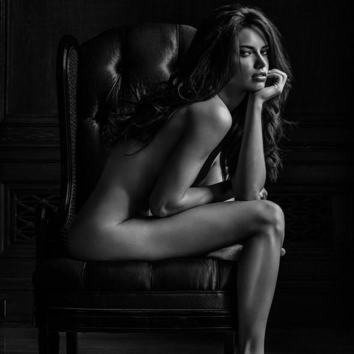
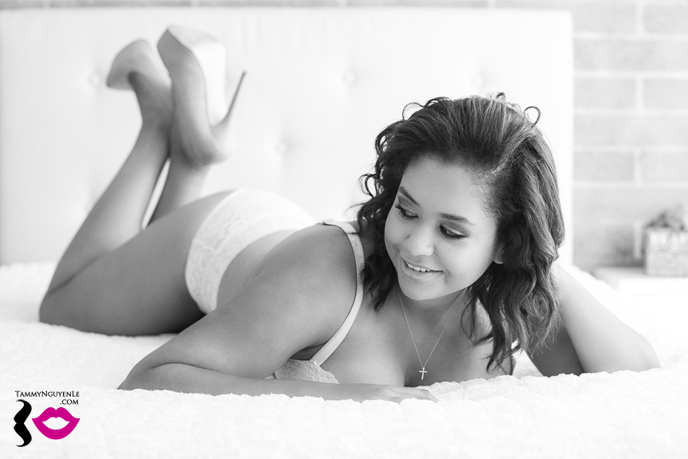

“the true nude gives a version of beauty, both physical and spiritual – two great needs of humanity”
- Albert Arthur Allen
"to see women entirely nude would place all women on equality. And it would be their true and mental and physical charm that would lift them from the ordinary”
- Albert Arthur Allen
Hello. My name is Joycelyn Rooney and one of my passions is to practice black and white, boudoir photography. As you read above, boudoir is essentially sensual, sexy photos of women in scandalous or no clothing. I really fell in love with black and white photography when I took a photography class during my sophomore year of college. I fell more into boudoir because I noticed the photos hung up in the Victoria's Secret store. The way they encaptured the beauty of each woman and all aspect of her body without actually showing any private body parts I thought was the coolest thing.

An aspect of boudoir photography I particularly enjoy is the freeness and judgement free zone of the art of it. The first quote I put above is one of my favorite. I feel that with media in our society makes women think that the skinnier you are, the more beautiful you are. That girls growing up these days believe you have to be a size 2 to be considered beautiful, or enough. This first quote that I put up discusses that all women are on an equal level when photographed nude. All women have the same parts in the same places. Just because they look different does not make one better than the other.
 I started experiencing with boudoir myself not too long ago, so I definitely have some work to do to perfect my skills but it has been a great ride. I chose to do form this site to try and show people that this style of photography is not meant to be porngraphic. It is to try and get the social notion of boudoir back to appreciating the beauty of the body without being overly tempting to the sexual nature of the viewer.
I started experiencing with boudoir myself not too long ago, so I definitely have some work to do to perfect my skills but it has been a great ride. I chose to do form this site to try and show people that this style of photography is not meant to be porngraphic. It is to try and get the social notion of boudoir back to appreciating the beauty of the body without being overly tempting to the sexual nature of the viewer.